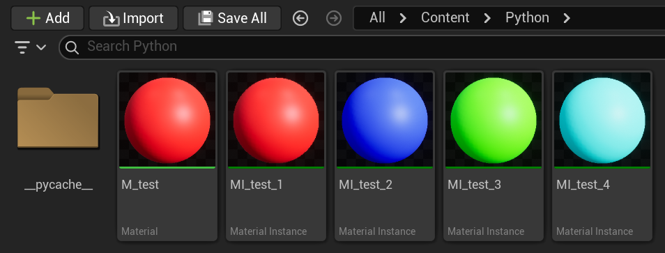
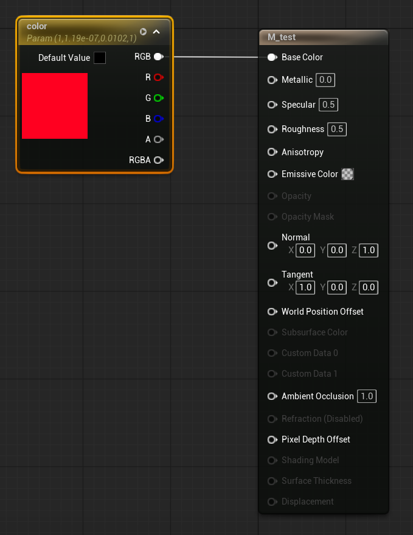
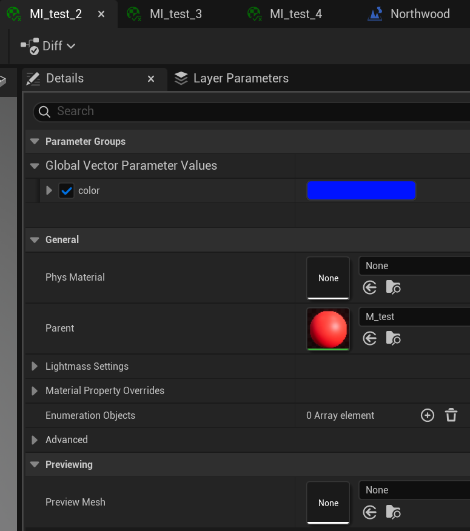
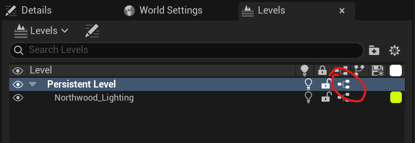
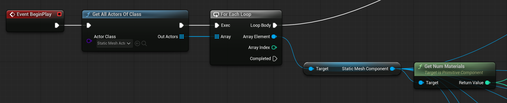
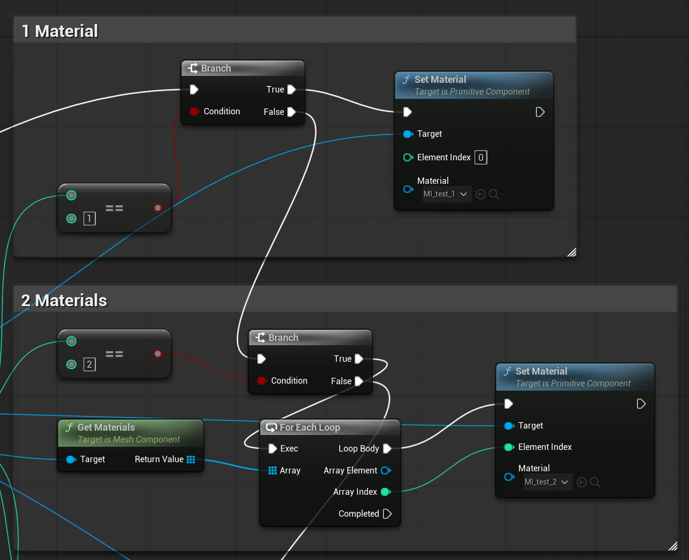
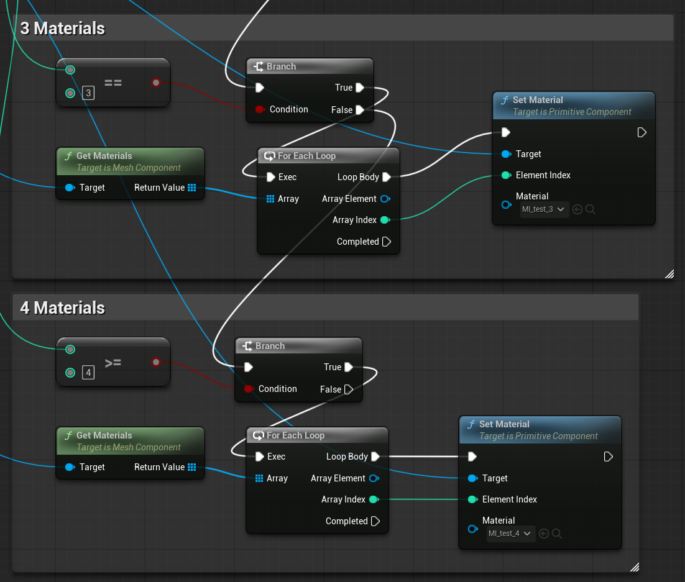
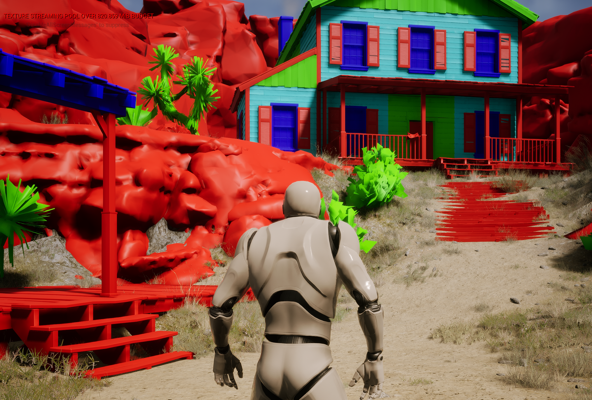

L9 Unreal Python API and Blueprints
Original note · Unmodified Markdown snapshot
Make materials and instances



Edit Level Blueprint:




Result:

Original note · Unmodified Markdown snapshot
Make materials and instances



Edit Level Blueprint:




Result:
